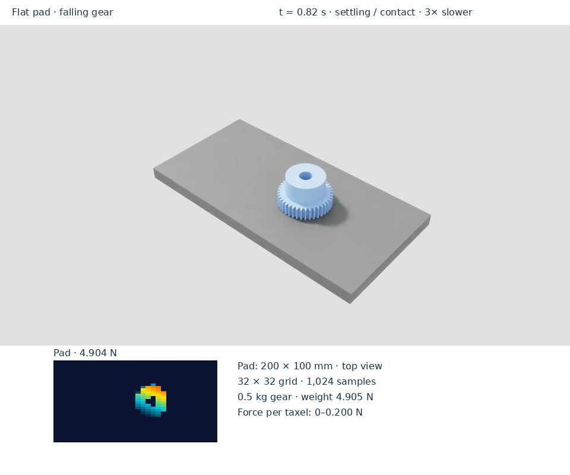

Flat-pad example
Watch the gear drop onto a flat sensing grid. The contact footprint appears as the load rises, then the total force settles near the gear’s weight. The heatmap is a top view of the 200 × 100 mm pad, displayed at its physical 2:1 aspect ratio. Its 32 columns follow the long axis and its 32 rows the short axis; the taxel values and pixel mapping are unchanged.



Run the example
Prerequisites: the installed environment. Run from the repository root. This scene downloads a gear from NVIDIA’s asset server on first use. Run the simpler scene for a broader view of object contact footprints:
python scripts/simple_example.py
The viewport shows a flat sampling grid and live tactile images. Sample
markers are enabled by default. Use --no-tactile-ui to hide the overlay.
The pixel arrangement belongs to the grid pattern; it is distinct from the
curved DEX-01 firmware layout. See patterns.
For an automated DEX-01 contact sweep and a known-load fixture, use the validation commands.
For a bounded smoke check without a window:
MPLBACKEND=Agg python scripts/simple_example.py --headless --max-steps 120
The scene uses a 32 × 32 grid (1,024 samples) on a flat pad and a 0.5 kg gear. It drops and resets the object every 100 steps and prints peak taxel force and total load. At 60 steps, the checked run reported about 0.1735 N peak taxel force and 4.9035 N total load, close to the gear’s 4.905 N weight. Transient readings vary during impact and reset.
This example demonstrates grid sensing. The curved DEX-01 has 740 occupied firmware pixels; use its 0.1 kg flat-indenter fixture for the quantitative known-load verification.